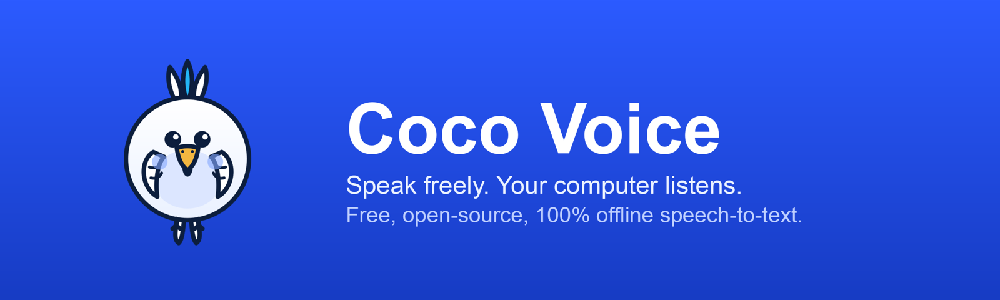
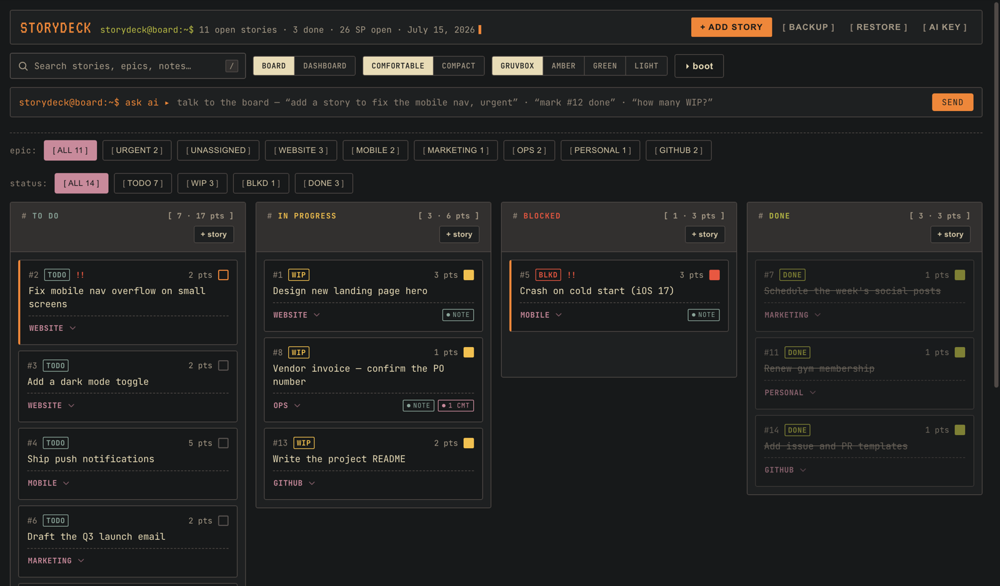

Fourteen things. Each at its real stage.
CoCo, above, is the flagship. Thirteen more things are built around it. Some you can download right now. Some are still in development, and are marked that way rather than dressed up. Where a product has no screenshot here, it is because it has not been built far enough to have one.

CoCo
Version 1.2.0 · MIT core · 184 skillsThe advisory board and skills library described above. Installs into Claude Code, Cursor, or Codex in about ninety seconds and keeps every decision on your own machine.
CoCo M0
The memory layer under everything elseEvery other tool here forgets when you close it. M0 is the part that does not: an operational thread carrying what you were doing, what you decided, and what is still open, so moving between Claude Code and Cursor does not mean explaining yourself twice. It is what makes the rest feel like one product rather than a folder of tools. The write path works today; the daemon and its tools are still landing.
CoCo Platform
Running locally, not yet packagedA control plane that exposes CoCo's memory, decisions, and verification to any editor speaking the Model Context Protocol. It runs here every day as a local server. What it does not have yet is an installer anyone else could use.
CoCoCode
Rust · a fork, headed toward its own projectA terminal coding harness built to stay small in memory, which is what decides whether you can run several agents at once or only one. It started as a fork of jcode by Jeremy Huang, whose MIT-licensed work is credited in the tree. It stays close to that upstream today; the intent is to grow it into its own architecture over time, not to claim that has already happened.
CoCo Connect
Version 0.2.1 · signed Apple silicon buildOne desktop app that installs, health-checks, and manages every CoCo module from a single place, so none of this requires a terminal if you do not want one. A Rust engine underneath a native interface. It is the front door to everything else on this page, which is why it gets its own tab rather than a tile in a grid.
Installs the whole family
Adds and removes CoCo modules without you editing a settings file by hand.
Tells you what is broken
Health checks every module and reports which ones are actually wired up.
Updates itself
Ships as a signed build with an auto-update feed, so upgrades are not a re-install.
The published build is Apple silicon. Other platforms are not packaged yet.

CoCo Voice
Version 0.9.4 · MIT · RustOffline speech to text for any text field on your machine. Nothing is uploaded and nothing is transcribed in someone else's data centre. The prebuilt app is Apple silicon; other platforms build from source. A rebrand of Handy by CJ Pais, MIT licensed — the dictation engine underneath is his.

StoryDeck
Version 1.3.0 · MIT · on-device onlyA sprint board that lives on your device and nowhere else. You can talk to the board in plain language to add a story or close one, and it still works with no network at all.
CoCo PDF
Built, not yet publicA desktop PDF editor for the everyday jobs: merge, sign, compress, OCR, redact. Files never leave the machine. It wraps the excellent Stirling PDF in a native shell rather than reinventing it, and credit for the engine belongs upstream. A build exists; the repository is still private.
CoCo Teach
Not yet releasedA tutor that keeps track of what you already know, so explanations start from your level instead of from the beginning every time. It is built on DeepTutor by HKUDS, adapted for CoCo's own memory. The research and the hard parts are theirs.
CoCo Router
Not yet releasedOne endpoint in front of many model providers, with automatic fallback when one of them fails or runs out of quota. Its working name internally is still OmniRoute; the rename hasn't reached a public build yet, which is also why there's no screenshot here.
CoCo Loops
Proprietary licence · PythonThe machinery that lets agents run unattended and still leave a reviewable trail behind them. You can read all of it. It is licensed rather than MIT, because unattended execution is the part we are least willing to have quietly forked.
Mira
AGPL-3.0 · TypeScriptA video engine that assembles short-form video without a human in the timeline. The source is public and copyleft, so anything built on it stays open. There is no packaged download; this is a repository, not a product yet.
CoCo Hermes
Rust · nothing released yetLocal source ingestion with quote-backed retrieval, so an answer can always be traced to the passage it came from. Planned as a signed macOS app with three destinations — ask, explore, and sources — and a store that stays on your own disk. To be accurate about where it stands: this is local work in progress, not yet pushed to a repository, let alone a release.
CoCo Fusion
Proprietary licence · parkedAn experiment in fusing outputs from several models into one answer. It is parked rather than abandoned, and it is published because the work is worth reading rather than because it is finished.